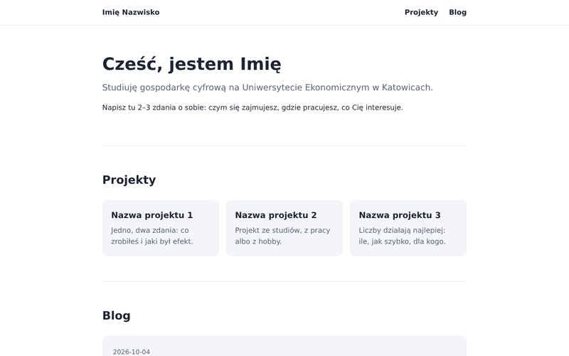
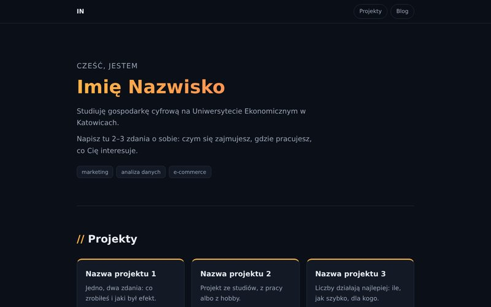
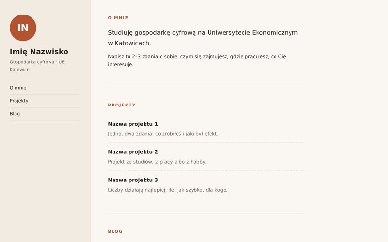

Szablon 1
Klasyczny
Jasny i prosty. Sam przełącza się na ciemny, gdy telefon ma tryb ciemny.

Szablon 2
Ciemny
Duże powitanie, tagi z zainteresowaniami i blog jako oś czasu.

Szablon 3
Z panelem bocznym
Ciepłe kolory, inicjały i menu po lewej. Na telefonie panel przechodzi na górę.
Jak użyć szablonu
- Utwórz na pulpicie folder
wizytowka. - Wejdź w wybrany szablon i kliknij Pobierz index.html. Zapisz plik w tym folderze.
- Otwórz plik w Notatniku i zmień teksty w sekcjach O mnie i Projekty na swoje.
- Wpisy na blogu dodajesz w tablicy
postsna dole pliku. Opis jest w komentarzu nad nią. - Opublikuj cały folder na Cloudflare według instrukcji z Classroom.
Wszystkie szablony działają tak samo, różnią się tylko wyglądem. Możesz też poprosić AI o zmianę kolorów albo układu.